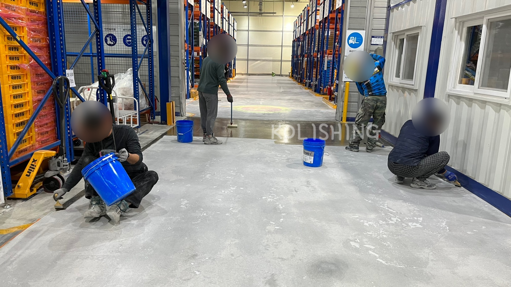
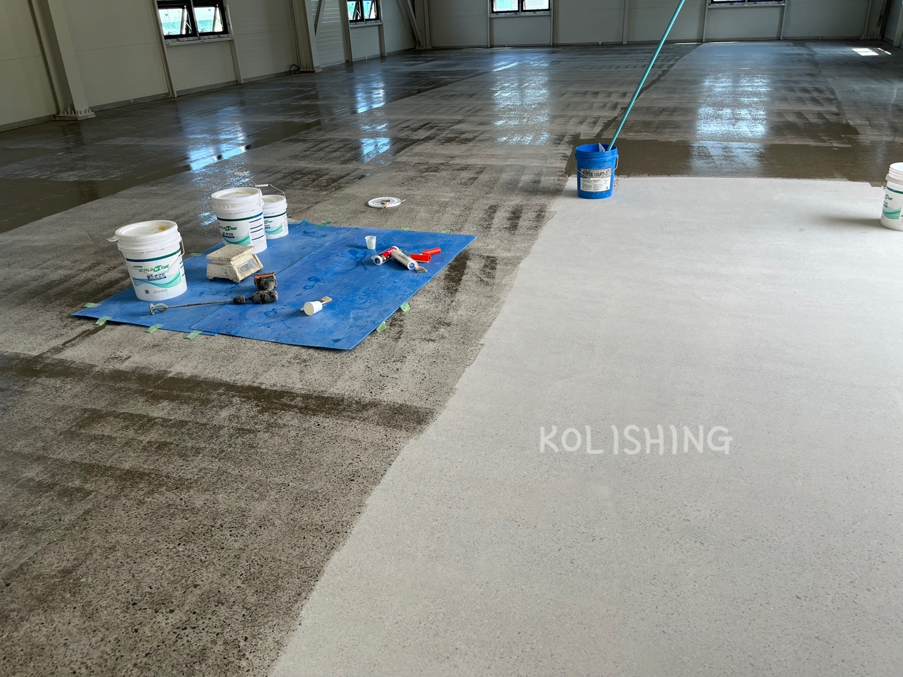

세라믹 폴리싱의 공정 순서를 요약하면 - 세미폴리싱에 준하는 연마단계를 거침
메탈 1단계(25~30빵) → 메탈 2단계(40~80빵) → 필요시 액상하드너(표면강화제 바닥의 기본기가 좋지 않은 콘크리트일때) →
메탈 3단계(150빵, 보수는 실시와 메꿈이작업 필수) → 레진 1단계(50빵) → 레진 2단계(100/200빵) →
→ 세라믹 도장 1차 → 세라믹 도장 2차 → 세라믹 도장 3차 마감(콘크리트 바닥의 기본기가 좋지 않은 바닥에서는 4차이상도 도장)
이렇게 된다. 도장시 1차와 2차도장은 연타치기가 가능하나 3차는 시간차를 두는것이 바람직하다.
하절기에는 연타도 가능하나 정상적인 상황에서는 시간차를 두는것이 바람직하다.
보충설명 : 액상하드너는 노출되는 콘크리트의 표면 경도(긇힘)에 대해 내구성을 향상시키는 과정
메꿈이작업은 세라믹 폴리싱에서는 필수로 시공하는것이 바람직하다.
콘크리트 내부에는 많은 기포들이 존제한다. 콘크리트를 갈았을때는 그런 기포들 및
기타 불순물이 노출되는데 그것을 제거하고 제거된 부분이나, 기포가 있던곳에 보수제가
체워진다.

